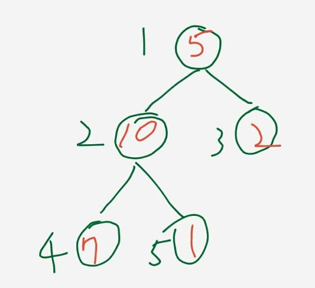
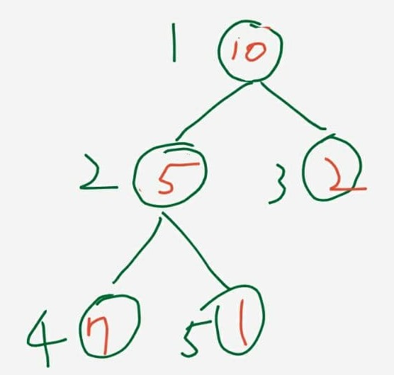
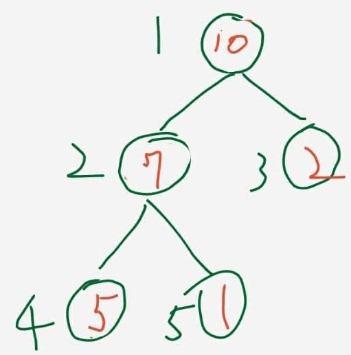
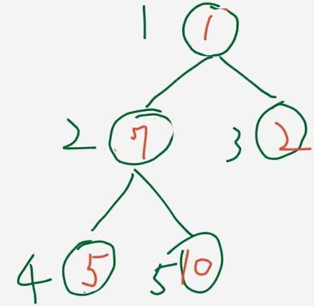
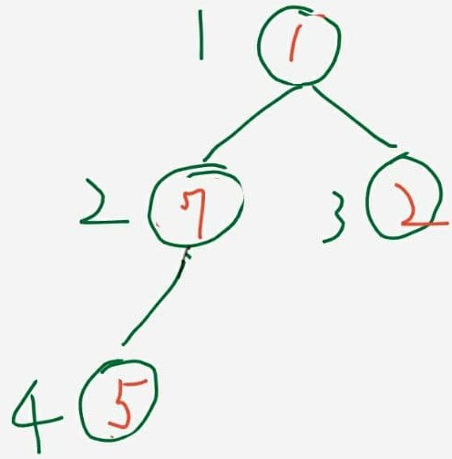

什麼是 Heap？
Heap 可以把它想成一棵 complete binary tree，也就是除了最後一層之外都被填滿， 最後一層則由左到右依序放入節點。因為結構固定得很規則，所以實作時通常不用真的建樹， 直接用陣列就能表示。

以上圖來看，如果節點位置用 1-based index 表示，父節點 i 的左兒子會是
2i，右兒子會是 2i + 1。也因為這個規則，heap 非常適合用陣列操作。
Max-Heap 和 Min-Heap
Heap 最重要的是「heap property」。如果每個父節點都大於等於自己的子節點，就是 max-heap； 如果每個父節點都小於等於自己的子節點，就是 min-heap。

要做由小到大的 Heap Sort，常見做法是先建立 max-heap。因為這樣每一次都能把當前最大值放到根節點， 再交換到陣列尾端，逐步完成排序。

核心觀念：把一個節點往下調整
Heap Sort 的關鍵不是交換本身，而是每次交換完之後，如何把不符合 heap property 的那個節點重新調回正確位置。
在這份筆記裡，這個動作由 adjust 負責。
def adjust(arr, i, n):
child = 2 * i # 兒子
item = arr[i - 1] # 被選中的值
while child <= n:
if child < n and arr[child - 1] < arr[child]:
child += 1
if item >= arr[child - 1]:
break
arr[(child // 2) - 1] = arr[child - 1]
child *= 2
arr[int(child // 2) - 1] = item
print("調整：", arr)
這段寫法有一個很實用的技巧：先把目前節點值存到 item，
然後一路往下找比較大的子節點，把較大的子節點往上搬。直到找到合適的位置，再把 item 放回去。
這樣可以避免每一層都做多餘交換。




先建堆，再排序
有了 adjust 之後，下一步就是把整個陣列整理成 max-heap。作法是從最後一個非葉節點開始，
一路往前呼叫 adjust。
def heapify(arr, n):
for i in range(int(n // 2), 0, -1):
adjust(arr, i, len(arr))
為什麼從 n // 2 開始？因為陣列後半段都是葉節點，葉節點本身不需要再往下調整。
真正可能破壞 heap property 的，是所有有子節點的父節點。
當整個陣列已經是一個 max-heap 之後，就能開始真正的排序流程：把根節點和尾端交換，
把目前最大值固定到右邊，接著縮小 heap 範圍，再對根節點做一次 adjust。
def heapSort(arr, n):
heapify(arr, len(arr))
for i in range(n, 1, -1):
arr[i - 1], arr[0] = arr[0], arr[i - 1]
print("交換：", arr)
adjust(arr, 1, i - 1)
return arr
這份實作使用 1-based 的 heap 思維去計算父子關係，但實際儲存在 Python list 時仍是 0-based。
所以你會看到很多 i - 1 這種位移。
實際跑一次
原 notebook 使用的測試資料是 [5, 10, 2, 7, 1]。先做 heapify，再反覆交換與調整，
最後得到排序好的結果。
arr = [5, 10, 2, 7, 1]
heapSort(arr, len(arr))
print("排序後", arr)
# 輸出
# 調整： [5, 10, 2, 7, 1]
# 調整： [10, 7, 2, 5, 1]
# 交換： [1, 7, 2, 5, 10]
# 調整： [7, 5, 2, 1, 10]
# 交換： [1, 5, 2, 7, 10]
# 調整： [5, 1, 2, 7, 10]
# 交換： [2, 1, 5, 7, 10]
# 調整： [2, 1, 5, 7, 10]
# 交換： [1, 2, 5, 7, 10]
# 調整： [1, 2, 5, 7, 10]
# 排序後 [1, 2, 5, 7, 10]這整個過程其實很有節奏感：先把最大值送到根，再把它交換到目前未排序區間的最後面， 然後把新的根重新下沉到正確位置。重複這件事，陣列右側就會慢慢形成一段已排序區間。
時間複雜度與特性
- 建立 heap 的時間複雜度是
O(n)。 - 之後每次取出最大值並重新調整是
O(log n)。 - 整體 Heap Sort 的時間複雜度是
O(n log n)。 - 額外空間複雜度可以做到
O(1)，因為排序能在原陣列上完成。 - 缺點是它通常不是 stable sort，而且實務上快取友善度也不一定比 quicksort 好。
小結
我覺得 Heap Sort 最容易卡住的地方，不是「交換根和尾端」這件事，而是怎麼理解 adjust 這個往下篩的動作。
一旦把「父節點要和較大的子節點比較」這個原則想清楚，整個演算法就會順很多。